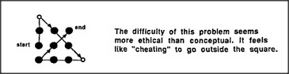
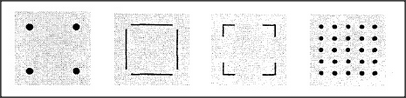

Most people find the nine-dot problem hard to solve because they assume that the dots form a square that bounds the working space. Indeed, the problem is insoluble unless the drawing can extend outside that area. Thus the problem is easier if one does not perceive those dots as forming a square. We often self-impose assumptions that make our problems more difficult, and we can escape from this only by reformulating those problems in ways that give us more room.
Really, there was never any square in the first place — that is, in the literal sense of a rectangle with equal sides. What makes us see so many different sorts of things as though they were squares?
Some of these squares have no corners, others have no edges, and some of them have neither corners nor edges! What makes us see them all as squares? Psychologists have long wondered how we recognize such similarities but often forgot to ask how we recognize the very simplest forms of squares in the first place. Which comes first in recognition, specific features or global shapes? It must depend upon one's state of mind. The way we perceive the world, from one moment to another, depends only in part on what comes from our eyes: the rest of what we think we see comes from inside our brain; we respond not only to visual features, but also to our remembrances of things we've seen before and to our expectations of what we ought to see.
It is tempting to assume that our visual processes work only in one direction, bringing information from the world into the mind:
But this does not explain how what we see is influenced by what we expect to see. Human vision must somehow combine the information that comes from the outer world with the structures in our memories. The situation must be more like this: